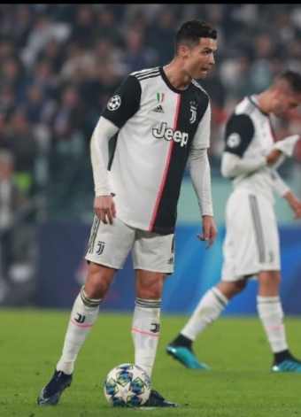
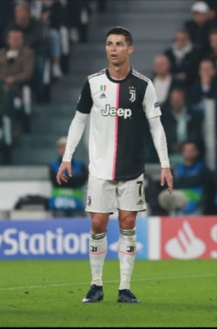
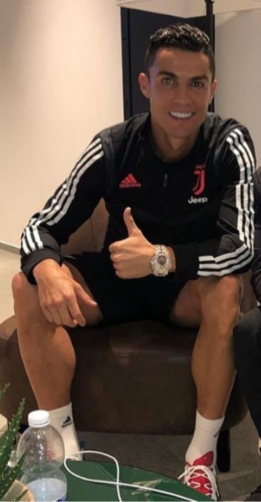

This is Cristiano Ronaldo
Ronaldo was born on February 5, 1985, in Funchal, Madeira, Portugal, a small island off the western coast of the country. Ronaldo is the youngest of four children. He grew up extremely poor and was diagnosed with a irregular heart beat quite young that he eventually had to get surgery for. He fell in love with soccer through his Father who eventually passed away.
Ronaldo left home at age 13 to play for a club in Portugal called "Sporting CP". He played there for years, scoring goals and making a name for himself. He got noticed by biggest clubs around the world and in 2003 went on to sign for Manchester United. Ronaldo spent a total of 6 years at Manchester, scoring 118 goals in 292 appearances. He was a wonderkid and that led to other clubs wanting him, Real Madrid in 2009 then signed Ronaldo for a world record transfer fee.
Ronaldo quickly rose to fame even more as being considered one of the greatest players of all time.
His Achievements: Record tying 5 Best Player in the world awards, Ronaldo holds the record for most goals in the UEFA Champions League (127), the UEFA European Championship (9), the FIFA Club World Cup (7), and the UEFA Nations League Finals (3), as well as most goals scored in a UEFA Champions League season (17). He has scored 702 senior career goals for club and country. Moreover, he is also the first player in history to win four European Golden Shoes.
As a person who has played soccer competetively all my life, Ronaldo is an idol. I look up to him and want to base my play style off him because of how good he is. I've followed his life since I was young, he has had an impact on millions of kids lives like mine.